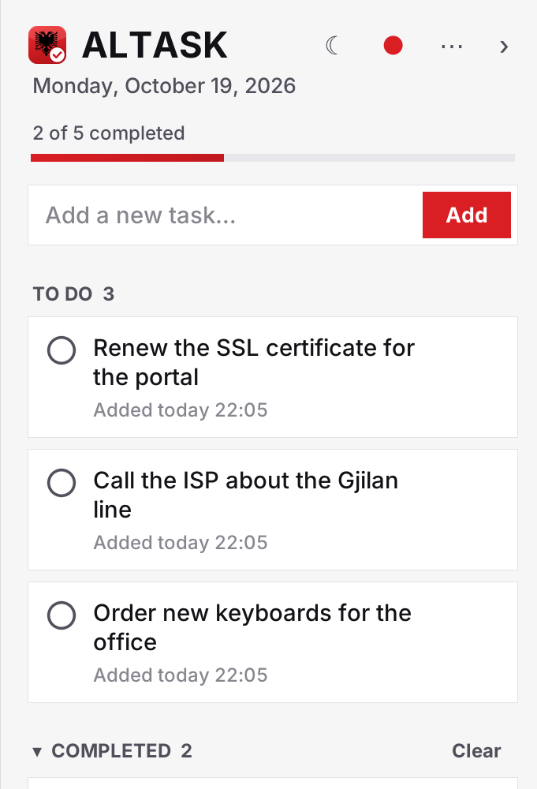
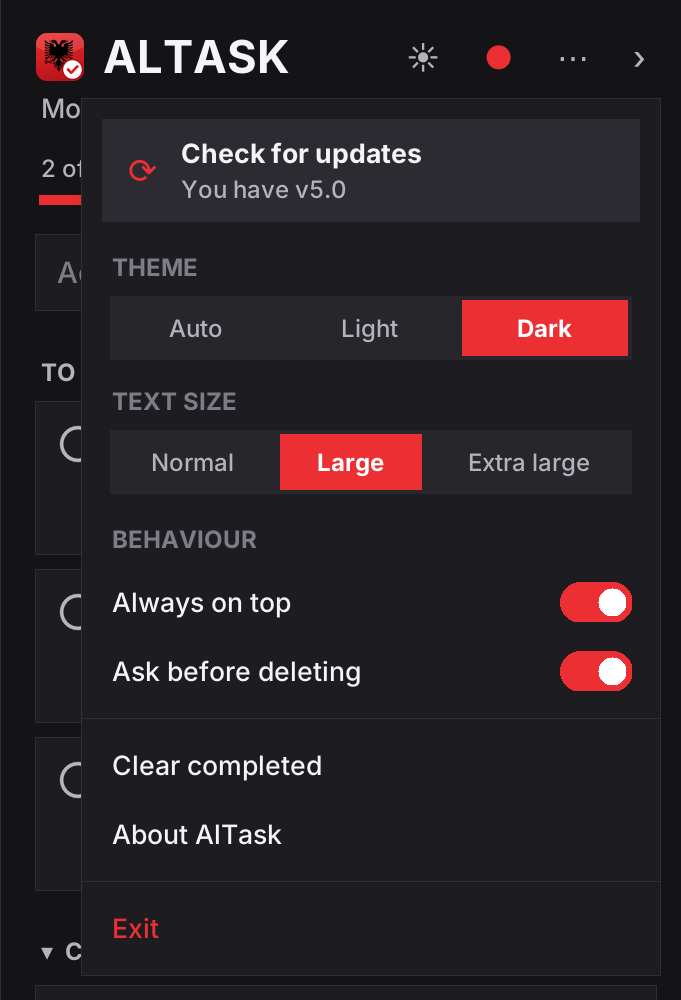
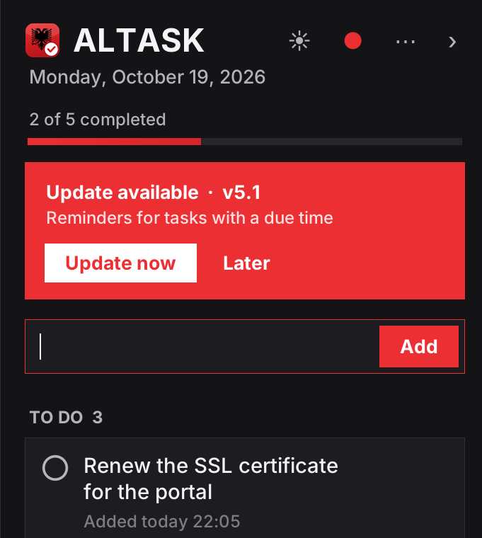
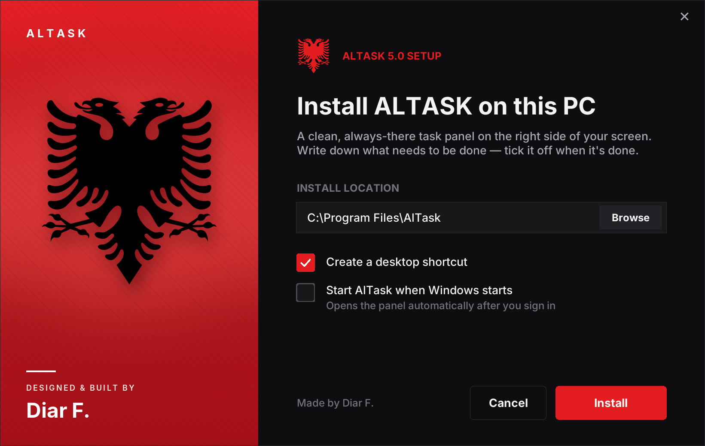

AlTask is a clean task panel that lives on the right edge of your screen. Write down what needs to be done — tick it off when it's done. No accounts, no clutter.
Built for people who just want a list they can see all day — without opening anything.
Sits along the right edge, above your other windows. Collapse it to a slim tab or drag to make it wider.
Tick a task and it moves to Completed with the time you finished it. Double-click any task to edit it.
AlTask asks before deleting, and Ctrl+Z brings back anything you removed.
Follows your Windows theme, or pick one yourself. Three text sizes so it's easy to read.
When a new version is out, AlTask tells you and installs it with one click. Every download is checksum-verified.
No account and no cloud. Your list is a small file on your computer, kept safe across every update.
Clear type, calm colours and a red accent — in light and dark.



A one-file installer with a bit of character. Pick a folder, choose your shortcuts, done.

Get AlTask-Setup.exe — one file, about 24 MB.
Open it, click Install and allow the Windows prompt (it installs into Program Files).
AlTask opens on the right of your screen. Type a task and press Enter.
Free, light and always on hand. Download AlTask and clear your head.
Download AlTask 5.0